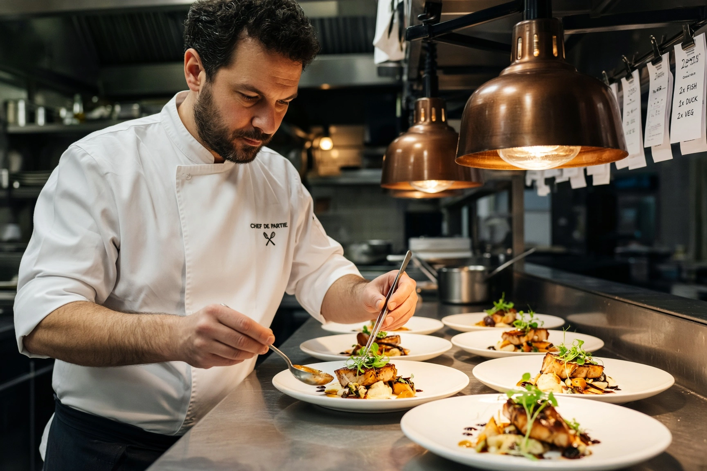
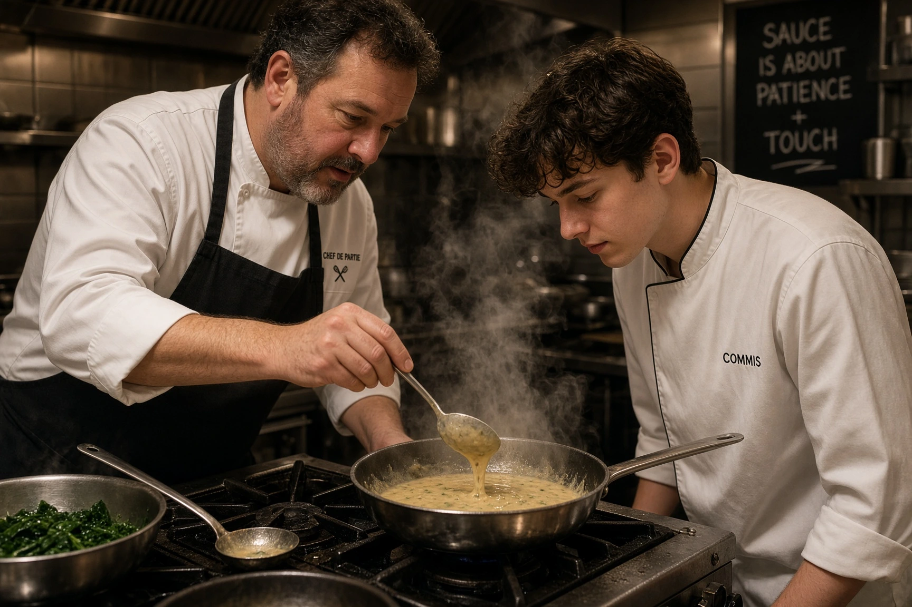

Salaire d'un chef de partie en 2026 : brut, net et grille HCR
Le chef de partie est responsable d'un poste de la cuisine — garde-manger, sauces, poissons, garnitures, pâtisserie — et souvent d'un ou deux commis. Il est classé au niveau III de la grille HCR, voire au niveau IV. Depuis le 1er novembre 2026, son minimum conventionnel démarre à 2 320 € brut par mois en 39h. Voici le détail par échelon, le net, les salaires réellement pratiqués et la suite de carrière.

Combien gagne un chef de partie en 2026 ?
Le chef de partie se situe le plus souvent au niveau III de la grille HCR : III/1 pour un demi-chef ou un chef de partie débutant, III/2 et III/3 pour un chef de partie confirmé. Dans certains établissements, notamment lorsqu'il encadre une équipe ou remplace régulièrement le second, il peut être classé au niveau IV.
| Niveau / échelon | Taux horaire brut | Brut mensuel 35h | Brut mensuel 39h | Net estimé 39h |
|---|---|---|---|---|
| III/1 | 13,59 € | 2 061 € | 2 320 € | ≈ 1 787 € |
| III/2 | 13,81 € | 2 095 € | 2 358 € | ≈ 1 816 € |
| III/3 | 14,28 € | 2 166 € | 2 438 € | ≈ 1 877 € |
| IV/1 | 14,69 € | 2 228 € | 2 508 € | ≈ 1 931 € |
| IV/2 | 15,07 € | 2 286 € | 2 573 € | ≈ 1 981 € |
Minima conventionnels de l'avenant n°36 à la convention collective HCR (IDCC 1979), applicable depuis le 1er novembre 2026. Base 35h = 151,67 h × taux ; base 39h = 151,67 h × taux + 17,33 h × taux × 1,10 (heures 36 à 39 majorées de 10 %). Net estimé = brut × 0,77, à titre indicatif. Hors avantage en nature repas, primes et heures au-delà de 39h.
Quelle classification HCR pour un chef de partie ?
Les éditeurs de paie spécialisés situent le chef de partie entre III/1 et IV/2 selon les fonctions exercées. Trois critères font la différence :
- L'autonomie : un chef de partie qui gère seul sa mise en place, ses commandes et son poste pendant le service relève au moins du III/2.
- L'encadrement : diriger un ou plusieurs commis, organiser leur travail et les former pèse dans le classement.
- Le diplôme : d'après les règles de classification de la branche, un diplôme de niveau 5 (BTS) donne droit au minimum au niveau III/2.
Le classement doit correspondre aux fonctions réellement exercées. Un « commis » qui tient seul une partie depuis des années peut revendiquer le niveau d'un chef de partie : c'est une source fréquente de litiges aux prud'hommes.

Le salaire réel d'un chef de partie sur le marché
Le minimum conventionnel d'un chef de partie confirmé (III/2 à III/3) est de 2 358 € à 2 438 € brut en 39h. Sur le marché, la tension sur les recrutements tire les salaires vers le haut : plusieurs offres d'emploi publiées en 2026 pour des chefs de partie se situent autour de 2 500 à 2 650 € brut mensuels. Les écarts dépendent fortement du type de cuisine (brasserie, gastronomique, hôtellerie), de la région et du volume d'heures.
Ce qui s'ajoute au salaire de base
- Heures supplémentaires : en HCR, les heures de la 36e à la 39e sont majorées de 10 %, de la 40e à la 43e de 20 %, et au-delà de 50 %.
- Avantage en nature repas : chaque repas pris sur place est évalué à 4,35 € (minimum garanti). Il s'ajoute au salaire et ne peut pas servir à atteindre le minimum conventionnel. Détail dans notre guide de l'avantage en nature repas.
- Travail de nuit, dimanches et jours fériés : contreparties prévues par la convention, voir la convention collective HCR.
Notre modèle de planning gratuit, compatible convention HCR, vous aide à maîtriser les heures et la masse salariale de votre brigade.
Accéder au planning →Chef de partie : un salaire qui varie selon le poste
Toutes les parties ne se valent pas sur le marché, même si la grille HCR ne fait pas de différence entre elles :
- Saucier et poissonnier : postes techniques, souvent les mieux valorisés dans les cuisines classiques.
- Pâtissier : compétence rare, très recherchée en restauration traditionnelle comme en hôtellerie.
- Garde-manger et entremétier : postes d'entrée fréquents pour un premier poste de chef de partie.
- Tournant : remplace les chefs de partie absents ; sa polyvalence se négocie.
Évolution : de chef de partie à second de cuisine
Après quelques années de chef de partie confirmé, l'étape suivante est le poste de second de cuisine (ou sous-chef), classé au niveau IV d'agent de maîtrise : 2 508 € à 2 682 € brut minimum en 39h. Le chef de partie vient lui-même du poste de commis de cuisine.
Voir le salaire d’un second de cuisine, puis celui d'un chef de cuisine, et la vue d'ensemble dans notre grille des salaires cuisiniers.
Questions fréquentes : salaire chef de partie
Combien gagne un chef de partie en 2026 ?
Au minimum conventionnel (avenant n°36, 1er novembre 2026), un chef de partie classé au niveau III gagne entre 2 320 € et 2 438 € brut par mois en 39h, soit environ 1 787 € à 1 877 € net. Sur le marché, plusieurs offres de 2026 se situent autour de 2 500 à 2 650 € brut.
Quel niveau HCR pour un chef de partie ?
Le chef de partie est généralement classé au niveau III (III/1 à III/3), et parfois au niveau IV lorsqu'il encadre une équipe ou remplace le second. Le classement doit correspondre aux fonctions réellement exercées.
Quelle différence de salaire entre commis et chef de partie ?
Au minimum conventionnel en 39h, un commis titulaire d'un CAP (II/1) touche 2 148 € brut, contre 2 358 € pour un chef de partie en III/2. En pratique, l'écart est souvent plus important sur le marché, car les chefs de partie sont très recherchés.
Un chef de partie est-il cadre ?
Non. Le chef de partie relève des employés (niveau III) ou, au plus, des agents de maîtrise (niveau IV). Le statut cadre correspond au niveau V de la grille HCR, en général celui du chef de cuisine.
Comment un chef de partie peut-il augmenter son salaire ?
En négociant un changement d'échelon formalisé par avenant, en se spécialisant sur une partie recherchée (pâtisserie, sauce, poisson), en visant la restauration gastronomique ou hôtelière, ou en évoluant vers le poste de second de cuisine.